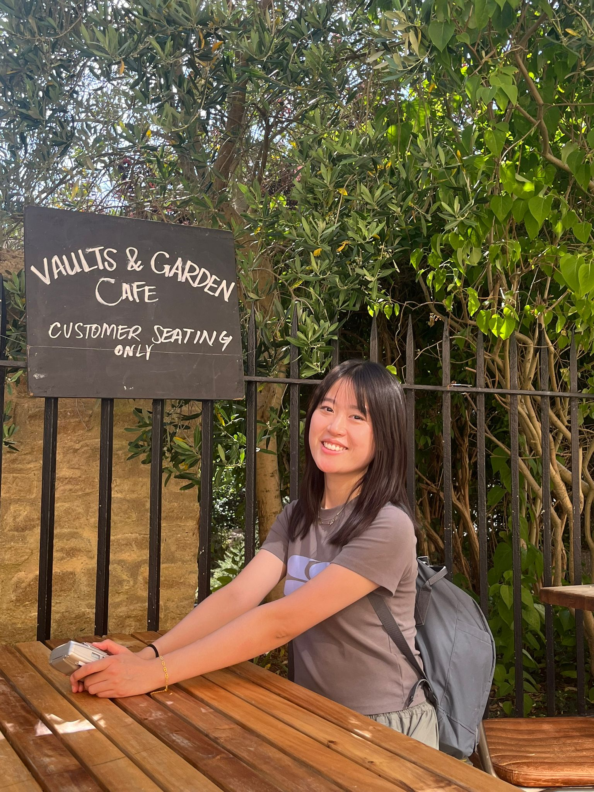
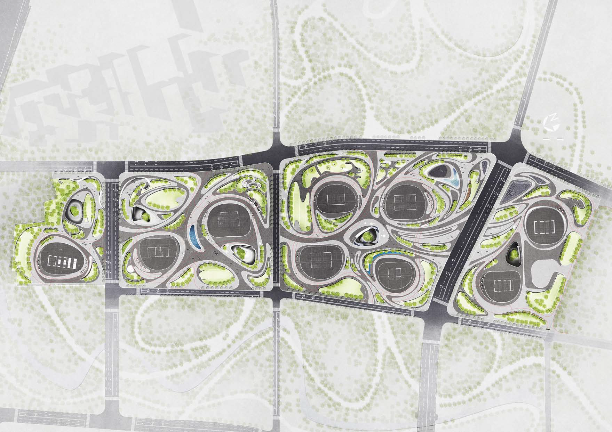
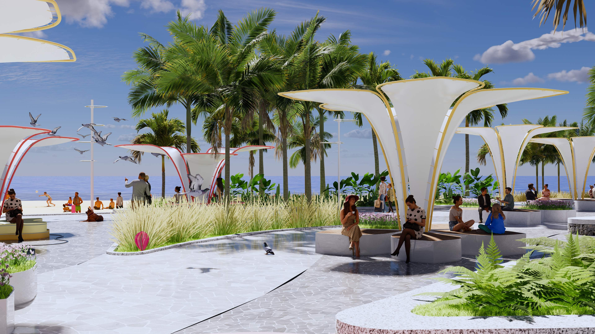
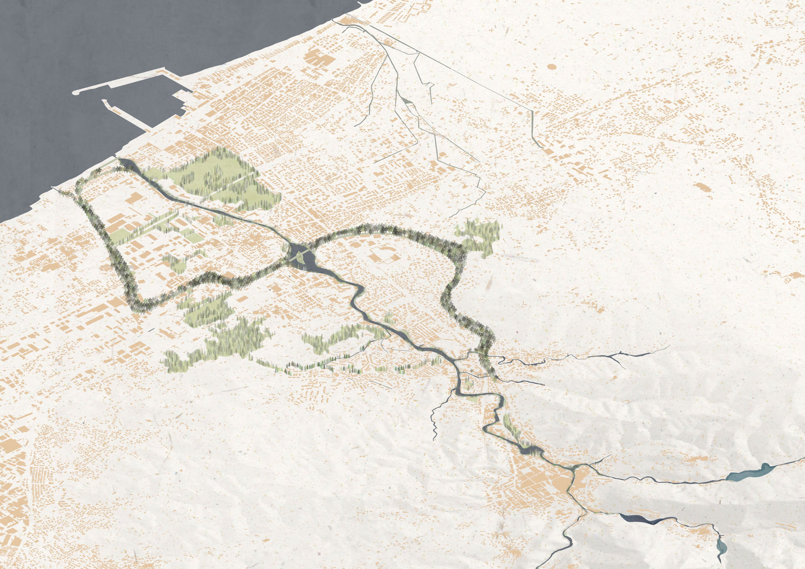
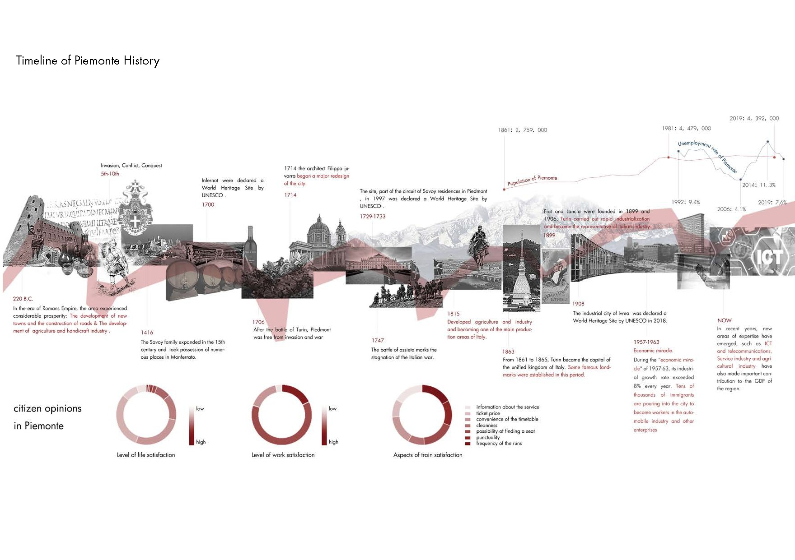
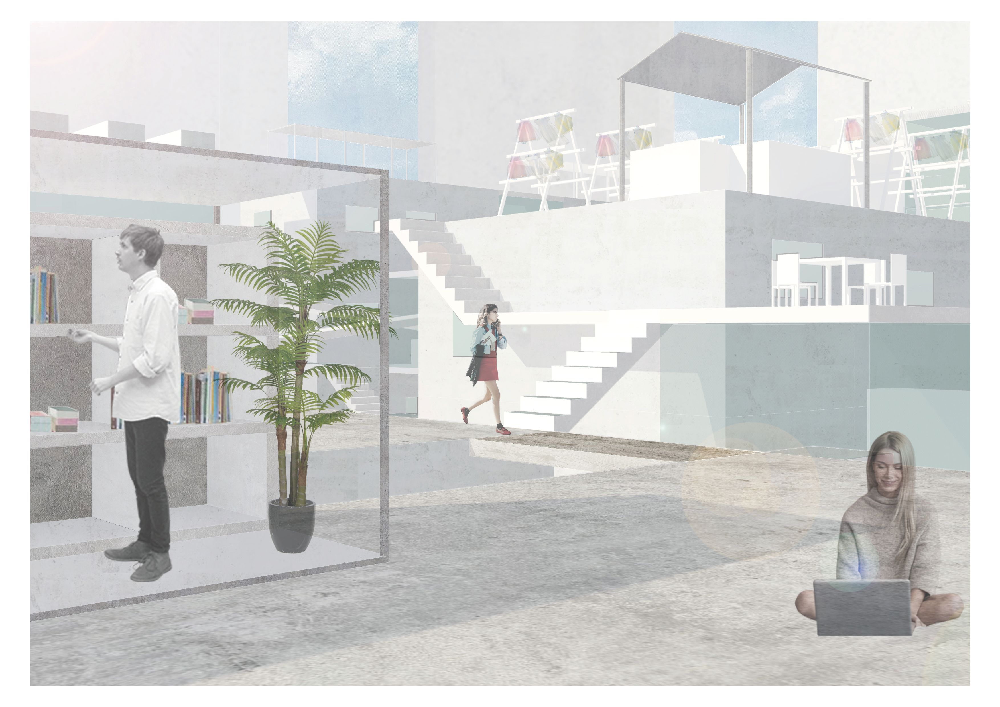

XITONG
DING
ABOUT ME
I am a second-year Ph.D. student at the University of Birmingham. My research explores the intersection of digital technologies and public engagement to create more inclusive cities. During my previous practice as a landscape architect, I noticed a critical lack of public participation in urban design, which inspired me to pursue my current doctoral journey in 2024.

+ CURRENT PhD RESEARCH
Improving Public Engagement in Urban Green Infrastructure Governance through Digital Twins
Based on a pilot study at The Vale Village, this research focuses on utilising interactive 3D models to facilitate public engagement especially in green space governance. Within the virtual environment, participants can adjust settings such as weather and time, freely edit site elements, and leave comments, creating a highly immersive co-design experience.
×
+ OTHER RESEARCH
This paper explores women-friendly public space planning within the paradigm of inclusive cities and gender mainstreaming. By analysing gender-specific spatial behaviours and perceptions, the study proposes a localised planning framework. It specifically focuses on optimising green public spaces, pedestrian networks, safety infrastructure, and public art installations to translate gender-inclusive concepts into tangible spatial governance.
Addressing the distinct digital divides and participatory behaviours across different age groups, this study explores how technology can facilitate meaningful intergenerational engagement. The study summarises existing ladders of digital participation to evaluate current digital platforms. It outlines a practical pathway from user-friendly design to inclusive decision-making, aiming to promote digital intergenerational engagement in future community spaces.
The Carrione, a 20km watercourse connecting marble quarry basins to the Mediterranean Sea, suffers from severe industrial pollution and landscape degradation. To address this, this project starts from the territorial scale to explore the relationship between watershed, city, and landscape. It then proposes strategies for recovering the watershed landscape, establishing a new blue-green system across different scales.
Using the Piemonte region as a case study, this research analyses both the tangible and intangible elements within the life cycle of obsolete cultural heritage in rural Italy. It establishes a quantitative decision-making model to systematically evaluate and revitalise abandoned sites, transforming them into catalysts for sustainable rural regeneration.
+ DESIGN WORK






+ EXPERIENCE
2026
Jan - May 2026
Teaching Assistant
Sustainable Urban Planning Module
2024
2024 - Present
PhD Candidate
School of Geography, University of Birmingham
2021
2021 - 2023
Landscape Architect
ECOLAND Planning and Design
2018
2018 - 2020
MSc. Landscape Architecture_Land.landscape heritage
Politecnico di Milano
2014
2014 - 2018
BSc. Landscape Architecture
South China Agricultural University
LET'S CONTACT